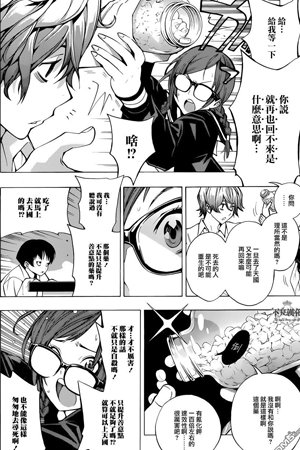
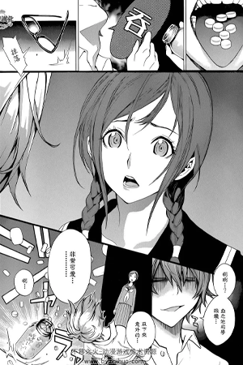

RKD-EK9
Synopsis
Enim ad ullamco incididunt in consequat enim ullamco non deserunt eiusmod incididunt magna quis sit. Nulla id mollit ipsum velit minim ullamco excepteur Lorem. Sint sint cupidatat cillum nisi mollit elit fugiat irure adipisicing pariatur qui. Amet duis dolore consequat aliqua qui labore do tempor sit. Eiusmod cupidatat proident occaecat mollit. Laboris adipisicing est do commodo enim sit sunt. Fugiat irure aliqua reprehenderit magna esse proident et consequat sit consequat aute proident. Sunt nostrud ex commodo quis labore voluptate ea sit officia incididunt magna. Sint sit voluptate mollit Lorem ad dolor. Qui et quis et sit qui qui reprehenderit dolore labore elit officia. Mollit anim duis non excepteur veniam exercitation. Deserunt ipsum mollit ut sit Lorem enim ullamco dolor. Et enim aliqua nisi esse excepteur consectetur laboris.
 Les personnages principaux

Moritaka Mashiro
真城 最高
Connu sous son pseudonyme Muto Ashirogi (亜城木 夢叶, Ashirogi Muto), et Saikô (サイコー, Saikō) pour les intimes. Collégien de 14 ans. Doté d'un talent pour le dessin, il rêvait de pouvoir devenir mangaka grâce à son oncle qui était professionnel. Malheureusement, son oncle décède et Mashiro croit qu'il est suicidé - ce qui lui fait abandonner (pour un temps) son plan de carrière pour vivre une vie "normale" composée de l'école, d'étude et de jeux vidéo, uniquement éclairé d'un amour secret pour sa camarade de classe, Miho Azuki. Un jour, ayant oublié son cahier de maths en classe, il tombe sur Akito, un camarade de sa classe, qui lui propose de faire équipe et devenir mangakas. Moritaka accepte de faire équipe avec Akito en découvrant que Miho, elle, rêve de faire du doublage. À la suite d'un enchaînement rocambolesque, il propose à cette dernière de l'épouser une fois leurs rêves accomplis : publier une série dessinée, laquelle sera adaptée en dessin animé pour Moritaka, et le doublage du rôle féminin principal dans leur dessin animé pour Miho.
Akito Takagi
高木 秋人
Connu sous son pseudonyme Muto Ashirogi (亜城木 夢叶, Ashirogi Muto), et Shûjin (シュージン, Shūjin) pour les intimes. Collégien de 14 ans. Doté d'un talent pour l'écriture, il rêvait de pouvoir devenir mangaka depuis tout petit, au moment où il a compris que son avenir ne devait pas être décidé par ses parents, mais par lui-même. Il est très intelligent et même premier de la classe à chaque examen. Ayant repéré Moritaka et son talent pour le dessin, il réussit à le convaincre de faire équipe avec lui et devenir mangakas. Dans la vie, il sort avec Kaya Miyoshi et vit à l'écart de ses parents dans une petite chambre louée à proximité du lycée, avant d'emménager avec Kaya dans un appartement trouvé par le père de celle-ci comme cadeau de mariage.
Miho Azuki
亜豆 美保
Camarade de classe de Moritaka et de Akito. Elle est la fille la plus belle du collège, selon Mashiro. Elle vient d'une famille aisée et rêve de faire du doublage. Un soir, elle accepte la demande en mariage de Mashiro à une seule condition : qu'ils ne se revoient plus avant d'avoir accompli leurs rêves tout en restant en contact par courriel. Belle, discrète et travailleuse, elle ne participe pas à la création des mangas du duo. Sa mère était l'ancien amour secret de l'oncle de Mashiro, qui, n'ayant plus la patience d'attendre sa déclaration, a épousé un autre homme. Miho, elle, attendra toujours - mais elle préférerait ne pas être une vieille femme à ce moment-là!
Kaya Miyoshi
見吉 香耶
Meilleure amie de Miho et petite amie (et plus tard, épouse) de Akito. Elle aide ses amis à accomplir leur rêve et aide Moritaka et Akito à la création de leur manga pour les aplats et les trames. Ancienne karatéka en quête de féminité, dotée d'un solide caractère et d'un punch dévastateur, elle est la "manuelle" du trio.